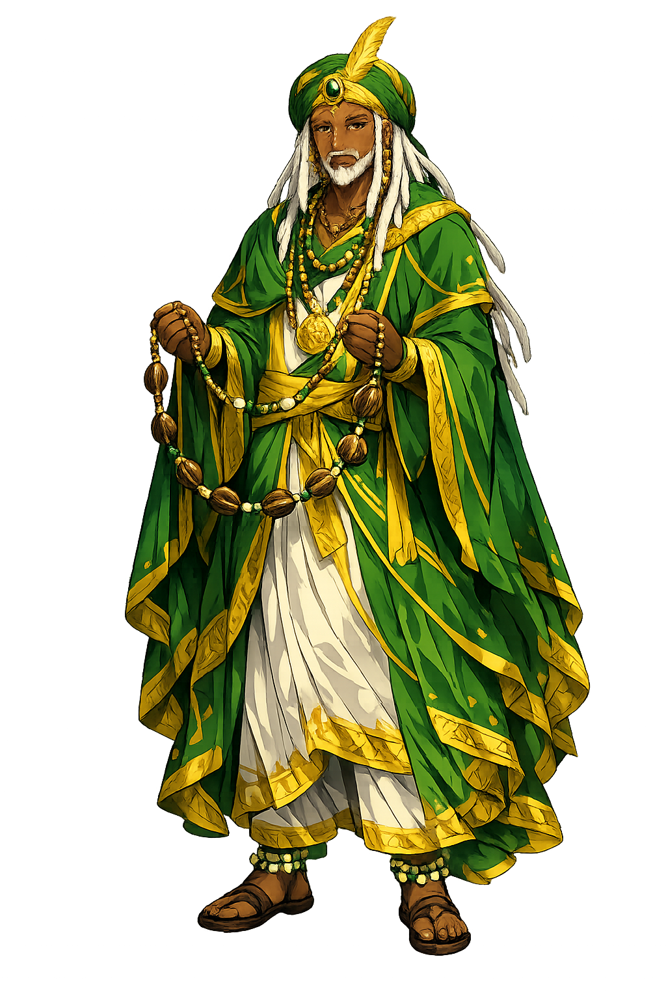

The Authentic Orthography
Wisdom, Divination, Ifá · Wisdom, Divination, Ifá · Heaven knows who will succeed

Unicode restoration and ASCII comparison
Ọrúnmìlà
The name survives only in scholarly transliteration. Ọrúnmìlà is the standard Yoruba romanisation, documented in academic sources — “Heaven knows who will succeed”. Its acute stress marks preserve distinctions lost in plain ASCII.
No indigenous writing system is securely attested for individual yoruba names. The form shown is a modern scholarly transliteration.
orunmila
Reduced to plain orunmila, the name loses everything that made it specific: acute stress marks. What remains is an ASCII string that machines can parse but that no longer speaks with its original voice.
Ọrúnmìlà
The Unicode restoration recovers what ASCII flattened. Ọrúnmìlà restores acute stress marks, returning the name to its original written dignity. The domain encodes to Punycode, but the browser displays the truth.
Ọrúnmìlà.com → xn--rnml-3na4exes761a.com
The non-ASCII characters in Ọrúnmìlà are encoded while the ASCII remains visible. To the DNS, it is Punycode. To humanity, it is Ọrúnmìlà.
How Ọrúnmìlà is preserved in writing
No indigenous writing system is securely attested for individual yoruba names. The form shown is a modern scholarly transliteration.
Contribute scholarly provenance →How Ọrúnmìlà was spoken
Wisdom, Divination, and the Ifá Corpus
Ọrúnmìlà is the orixá of wisdom and the patron of Ifá, the Yoruba divination system that maps human destiny against the patterns of the cosmos. He was present at creation; he knows the day the world was made and the names that were spoken into it. Kings do not act without consulting him, and no orixá is said to understand the future as he does.
Unlike Ṣàngó or Ọya, he is not a warrior. His power is speech, memory, and the ability to read the signs hidden in the fall of sixteen palm nuts.
Sixteen palm nuts and the divination chain reveal the odù that governs a situation.
He remembers the verses, medicines, and sacrifices that restore cosmic balance.
Only he saw the world being made; therefore only he can interpret its deepest laws.
The father of secrets — the title of the priests who speak for him in divination.
Stories of Ọrúnmìlà
Ọrúnmìlà's mythology is textual as much as narrative: it lives in thousands of Ifá verses (òdù Ifá) that record his journeys, judgments, and interventions.
According to Ifá tradition, Ọrúnmìlà was the only orixá present when Olódùmarè created the earth. He observed the placement of the rivers, the rising of the mountains, and the distribution of destinies. Because he witnessed the beginning, he can trace any present trouble back to its origin and prescribe the sacrifice that will set it right.
The Ifá corpus is organised around sixteen principal odù, each with sixteen sub-odù, generating 256 basic combinations. Each odù is a world of stories, proverbs, and medicines. Ọrúnmìlà is not merely the system; he is the living voice that speaks through it when the babalawo casts the chain or nuts.
In one widespread Ifá narrative, Ọrúnmìlà advises humans on how to choose their destiny (àyẹ̀wò) before birth. The choice is made in heaven, but once taken it binds the living. Ọrúnmìlà's role is not to change fate but to reveal its contours and the sacrifices that can soften its hardest edges.
Ọrúnmìlà is the god who knows that knowing is not enough. He possesses the memory of creation, yet his work is not to dazzle humans with that memory but to guide them through the small, repeated acts — casting nuts, reciting verses, making sacrifice — that restore alignment.
Enter Extended Lore